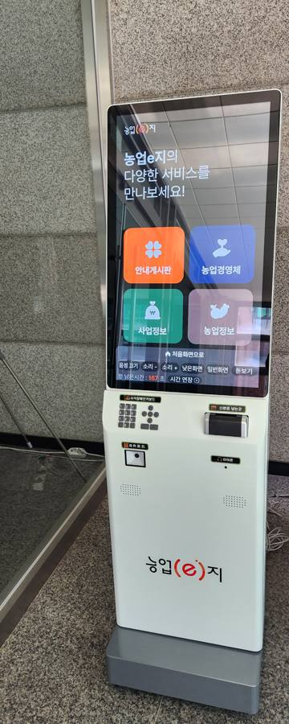

<!DOCTYPE html>
<html lang="ko">
<head>
<meta charset="utf-8">
<meta name="viewport" content="width=device-width, initial-scale=1, viewport-fit=cover">
<meta name="theme-color" content="#1f2937">
<title>농업e지 키오스크 연습</title>
<meta name="description" content="면사무소 농업e지 키오스크 사용법을 휴대폰으로 미리 연습하는 모의 체험(연습용)">
<style>
:root{--org:#ff5a1f;--bar:#3b3b40;--ink:#1d1d1f;--sub:#666;--line:#e6e6e6;--soft:#f4f4f5}
*{box-sizing:border-box}
html,body{margin:0;height:100%;background:#e9e6e1;color:var(--ink);
  font-family:"Pretendard","Apple SD Gothic Neo","Noto Sans KR","Malgun Gothic",sans-serif;-webkit-text-size-adjust:100%}
button{font-family:inherit;color:inherit;cursor:pointer;-webkit-tap-highlight-color:transparent}
.frame{max-width:480px;margin:0 auto;height:100vh;height:100dvh;display:flex;flex-direction:column;background:#fff;position:relative;overflow:hidden}
@media (min-width:600px){.frame{height:calc(100dvh - 32px);margin:16px auto;border-radius:26px;border:10px solid #222}}
.banner{background:#1f2937;color:#fff;font-size:14px;padding:8px 12px;display:flex;justify-content:space-between;align-items:center;gap:8px}
.banner button{background:#374151;border:0;color:#fff;border-radius:8px;padding:6px 10px;font-size:14px}
.guide{background:#fff4c2;border-bottom:2px solid #f2c200;padding:10px 12px;font-size:18px;font-weight:700;line-height:1.4;display:flex;gap:8px;align-items:flex-start}
.guide .gtxt{flex:1}
.guide button{background:#fff;border:1px solid #e0b800;border-radius:8px;padding:4px 8px;font-size:14px;white-space:nowrap}
.screen{flex:1;overflow-y:auto;padding:20px 18px 28px;-webkit-overflow-scrolling:touch}
.k-small{font-size:14px;color:var(--sub)}
.k-title{font-size:26px;font-weight:400;line-height:1.38;margin:6px 0 22px}
.k-title b{font-weight:800}
.brand{font-size:18px;font-weight:800;margin-bottom:6px}
.brand .e{color:var(--org);border:2px solid var(--org);border-radius:50%;padding:0 5px;margin:0 1px;font-size:15px}
.opt{display:block;width:100%;background:var(--soft);border:1px solid var(--line);border-radius:14px;padding:22px 16px;font-size:20px;font-weight:700;margin-bottom:12px;text-align:center;position:relative}
.opt small{display:block;font-size:14px;font-weight:400;color:var(--sub);margin-top:4px}
.btns{display:flex;gap:10px;margin-top:22px}
.btn{flex:1;padding:16px 10px;font-size:19px;border-radius:12px;border:1px solid #cfcfcf;background:#fff;position:relative}
.btn.pri{flex:2;background:var(--org);color:#fff;border-color:var(--org);font-weight:700}
.note{font-size:14px;color:var(--sub);line-height:1.5;margin:10px 0}
.tiles{display:grid;grid-template-columns:1fr 1fr;gap:14px}
.tile{aspect-ratio:1/1.02;border:0;border-radius:18px;color:#fff;font-size:21px;font-weight:800;display:flex;flex-direction:column;align-items:center;justify-content:center;gap:10px;position:relative}
.tile .ic{font-size:46px;line-height:1}
.t1{background:#ff6b2c}.t2{background:#4b7cf5}.t3{background:#2f9e6a}.t4{background:#cf8aa0}
.bar{background:var(--bar);color:#fff;padding:6px 8px 10px}
.bar .homeb{display:block;width:100%;background:none;border:0;color:#fff;font-size:17px;font-weight:700;padding:6px}
.bar .row{display:flex;gap:4px;flex-wrap:wrap;justify-content:center}
.pill{background:#5a5b62;color:#fff;border:0;border-radius:999px;padding:8px 8px;font-size:13px;position:relative;white-space:nowrap}
.pill.on{background:#fff;color:#222}
.bar .trow{display:flex;justify-content:center;align-items:center;gap:8px;margin-top:6px;font-size:14px}
.bar .t{color:#ffb38f;font-weight:800}
.hint{outline:4px solid #ffcc00 !important;outline-offset:3px;animation:pulse 1.2s infinite;z-index:3}
.hint::after{content:"👆";position:absolute;right:6px;bottom:-12px;font-size:32px;animation:tap 1.2s infinite;pointer-events:none}
@keyframes pulse{0%,100%{box-shadow:0 0 0 0 rgba(255,204,0,.9)}50%{box-shadow:0 0 0 12px rgba(255,204,0,0)}}
@keyframes tap{0%,100%{transform:translateY(0)}50%{transform:translateY(-6px)}}
.steps{margin:4px 0 8px}
.step{display:flex;align-items:center;gap:12px;padding:14px 6px;border:0;border-bottom:1px solid #eee;background:none;width:100%;text-align:left;position:relative}
.step .dot{flex:none;width:36px;height:36px;border-radius:50%;background:#d9d9d9;color:#fff;display:grid;place-items:center;font-size:20px;font-weight:800}
.step.done .dot{background:var(--org)}
.step .st{font-size:18px;font-weight:700}
.step .ss{font-size:14px;color:var(--sub);margin-top:2px}
.step .arr{margin-left:auto;font-size:22px;color:#999}
.tabs{display:flex;gap:6px;overflow-x:auto;margin-bottom:14px;padding-bottom:4px}
.tab{flex:none;border:1px solid var(--line);background:#fff;border-radius:10px;padding:10px 12px;font-size:16px;position:relative}
.tab.on{background:var(--org);color:#fff;border-color:var(--org);font-weight:700}
.card{border:1px solid var(--line);border-radius:14px;padding:14px 16px;margin-bottom:12px}
.kv{display:flex;justify-content:space-between;gap:10px;padding:6px 0;font-size:17px}
.kv span:first-child{color:var(--sub)}
.kv b{font-weight:800}
.plist{width:100%;text-align:left;background:#fff;border:1px solid var(--line);border-radius:12px;padding:14px;margin-bottom:10px;font-size:17px;position:relative}
.plist .pa{font-weight:700}
.plist .pd{font-size:15px;color:var(--sub);margin-top:4px}
.detail{background:var(--soft);border-radius:10px;padding:10px 12px;margin-top:10px;font-size:16px;line-height:1.6}
.chk{display:flex;align-items:center;gap:12px;width:100%;background:none;border:0;padding:14px 4px;font-size:18px;text-align:left;border-bottom:1px solid #eee;position:relative}
.chk .box{flex:none;width:30px;height:30px;border:2px solid #bbb;border-radius:8px;display:grid;place-items:center;font-size:20px;color:#fff}
.chk.on .box{background:var(--org);border-color:var(--org)}
.chk.all{font-weight:800;font-size:19px}
.field{margin-bottom:16px}
.field label{display:block;font-size:15px;color:var(--sub);margin-bottom:6px}
.field .ro{background:var(--soft);border-radius:10px;padding:14px;font-size:18px}
.field input,.field select{width:100%;font-size:20px;padding:14px;border:2px solid #cfcfcf;border-radius:10px;background:#fff;font-family:inherit}
.seg{display:flex;gap:8px}
.seg button{flex:1;padding:16px 6px;font-size:18px;border:2px solid #d0d0d0;border-radius:12px;background:#fff;position:relative}
.seg button.on{border-color:var(--org);color:var(--org);font-weight:800;background:#fff4ef}
.entry{border:1px solid var(--line);border-radius:14px;padding:14px;margin-bottom:12px}
.entry h3{margin:0 0 10px;font-size:18px;color:var(--org);display:flex;justify-content:space-between;align-items:center}
.entry h3 button{font-size:14px;border:1px solid #ccc;border-radius:8px;background:#fff;padding:4px 10px;color:#333}
.pickbtn{width:100%;font-size:20px;padding:14px;border:2px solid #cfcfcf;border-radius:10px;background:#fff;text-align:left;position:relative}
.wrap{position:relative;border-radius:12px}
.crops{display:grid;grid-template-columns:repeat(3,1fr);gap:10px}
.crops button{padding:18px 4px;font-size:19px;border:1px solid #d6d6d6;border-radius:12px;background:#fff;position:relative}
.crops button.on{border:2px solid var(--org);color:var(--org);font-weight:800}
.change{background:#fff4ef;border:1px solid #ffc9b3;border-radius:12px;padding:12px 14px;margin-bottom:10px;font-size:17px;line-height:1.5}
.change .old{color:#888;text-decoration:line-through}
.change .new{color:var(--org);font-weight:800}
.idcard{height:170px;border:1px solid var(--line);border-radius:14px;background:#fafafa;position:relative;overflow:hidden;margin-bottom:10px}
.idcard .slot{position:absolute;left:24%;top:30%;width:64px;height:84px;background:#2b2b2b;border-radius:8px}
.idcard .slot::after{content:"";position:absolute;left:14px;right:14px;top:34px;height:8px;background:#777;border-radius:3px}
.idcard .cardimg{position:absolute;left:48%;top:24%;width:120px;height:78px;background:linear-gradient(135deg,#f3e3c3,#e7cfa2);border-radius:8px;border:1px solid #c9ad7c;animation:slide 2s infinite}
.idcard .cardimg::before{content:"";position:absolute;left:10px;top:14px;width:30px;height:38px;background:#9c8a70;border-radius:4px}
@keyframes slide{0%{transform:translateX(40px);opacity:0}30%{opacity:1}100%{transform:translateX(-30px)}}
.spin{width:64px;height:64px;border:7px solid #eee;border-top-color:var(--org);border-radius:50%;margin:40px auto 20px;animation:rot 1s linear infinite}
@keyframes rot{to{transform:rotate(360deg)}}
.center{text-align:center}
.org{color:var(--org);font-weight:800}
.toast{position:absolute;left:14px;right:14px;bottom:130px;background:rgba(20,20,20,.93);color:#fff;padding:14px 16px;border-radius:12px;font-size:17px;line-height:1.45;z-index:50;text-align:center}
.modal{position:absolute;inset:0;background:rgba(0,0,0,.55);display:grid;place-items:center;z-index:60;padding:20px}
.modal .mbox{background:#fff;border-radius:16px;padding:22px 18px;max-width:380px;font-size:18px;line-height:1.5;text-align:center}
/* 연습 첫 화면 */
.intro h1{font-size:27px;line-height:1.35;margin:4px 0 10px}
.intro .lead{font-size:18px;line-height:1.55;color:#333;margin:0 0 16px}
.intro .photo{display:flex;gap:14px;align-items:center;background:var(--soft);border-radius:16px;padding:12px;margin-bottom:18px}
.intro .photo img{width:96px;height:auto;border-radius:10px;flex:none}
.intro .photo p{margin:0;font-size:16px;line-height:1.5}
.mis{display:block;width:100%;text-align:left;border:2px solid var(--line);border-radius:16px;padding:16px;margin-bottom:12px;background:#fff}
.mis .mt{font-size:21px;font-weight:800}
.mis .md{font-size:16px;color:var(--sub);margin-top:4px}
.mis .num{display:inline-grid;place-items:center;width:30px;height:30px;border-radius:50%;background:var(--org);color:#fff;font-size:17px;margin-right:6px}
.toggle{display:flex;justify-content:space-between;align-items:center;background:var(--soft);border-radius:12px;padding:12px 14px;margin:6px 0 16px;font-size:18px}
.toggle button{border:0;border-radius:999px;padding:8px 16px;font-size:16px;background:#ccc}
.toggle button.on{background:var(--org);color:#fff}
.foot{font-size:13px;color:#888;line-height:1.6;margin-top:18px}
.tips{background:var(--soft);border-radius:14px;padding:14px 16px;font-size:17px;line-height:1.6;margin:16px 0}
.tips li{margin-bottom:6px}
/* 화면 설정 */
.big .screen{zoom:1.18}
.low .screen{padding-top:34vh}
.hc .screen{background:#000;color:#ffea00}
.hc .opt,.hc .plist,.hc .card,.hc .entry,.hc .tab,.hc .seg button,.hc .crops button,.hc .btn,.hc .pickbtn,.hc .field .ro,.hc .detail,.hc .chk .box{background:#000;color:#ffea00;border-color:#ffea00}
.hc .k-small,.hc .note,.hc .step .ss,.hc .kv span:first-child,.hc .plist .pd,.hc .opt small{color:#fff}
.hc .btn.pri,.hc .tab.on{background:#ffea00;color:#000}
.hc .change{background:#000;border-color:#ffea00}
.hc .change .old{color:#bbb}
.hc .change .new{color:#ff9a6b}
</style>
</head>
<body>
<div class="frame" id="frame">
  <div id="app" style="display:flex;flex-direction:column;height:100%"></div>
</div>
<script>
(function(){
'use strict';
var CROPS=['벼','콩','옥수수','감자','고구마','무','배추','마늘','양파','건고추','사과','포도','떫은감','감귤','복숭아','딸기','참깨','들깨'];
var REG={name:'나농부',birth:'1955.01.01',regNo:'0000000000',since:'2007년',phone:'010-0000-0000',
  addr:'경상북도 의성군 연습면 연습리 12',others:[{name:'나부인',rel:'배우자',birth:'1958.05.05'}],
  parcels:[
    {id:0,addr:'의성군 연습면 연습리 101',jimok:'전',area:2000,type:'자경',owner:'나농부',crops:[{fac:'노지',crop:'건고추',area:2000}]},
    {id:1,addr:'의성군 연습면 연습리 102',jimok:'답',area:3000,type:'자경',owner:'나농부',crops:[{fac:'노지',crop:'벼',area:3000}]},
    {id:2,addr:'의성군 연습면 연습리 205',jimok:'전',area:1500,type:'임차',owner:'다른 사람',crops:[{fac:'노지',crop:'사과',area:1500}]}]};
var MIS={
  A:{title:'내 정보 확인하기',desc:'내 농지와 재배 품목이 맞게 올라가 있는지 봐요'},
  B:{title:'재배 품목 바꾸기',desc:'연습리 101번지 건고추를 마늘로 바꿔요',pid:0},
  C:{title:'재배 면적 고치기',desc:'연습리 102번지 벼 3,000㎡를 2,500㎡로 고쳐요',pid:1}};
var LIMIT=180;
function clone(o){return JSON.parse(JSON.stringify(o));}
function fmt(n){return Number(n).toLocaleString('ko-KR');}
function esc(s){return String(s).replace(/[&<>"]/g,function(c){return {'&':'&amp;','<':'&lt;','>':'&gt;','"':'&quot;'}[c];});}

var S={screen:'intro',mission:null,voice:true,vol:1,big:false,hc:false,low:false};
function reset(m){
  S.mission=m;S.logged=false;S.after=null;S.draft=clone(REG);
  S.done={terms:false,owner:false,others:false,farm:false,live:false};
  S.agree=[false,false,false];S.tab='경영체';S.open=null;S.edit=null;S.snap=null;S.pick=null;S.phoneSent=false;S.opened=false;
}
reset(null);

/* ---------- 이동 ---------- */
function go(s){S.screen=s;S.t=LIMIT;render();var sc=document.querySelector('.screen');if(sc)sc.scrollTop=0;}
var toastTimer;
function toast(msg,ms){
  var old=document.querySelector('.toast');if(old)old.remove();
  var d=document.createElement('div');d.className='toast';d.textContent=msg;
  document.getElementById('frame').appendChild(d);clearTimeout(toastTimer);
  toastTimer=setTimeout(function(){d.remove();},ms||3200);say(msg,true);
}
function modal(html,btn,cb){
  var d=document.createElement('div');d.className='modal';
  d.innerHTML='<div class="mbox">'+html+'<div class="btns"><button class="btn pri" id="mok">'+btn+'</button></div></div>';
  document.getElementById('frame').appendChild(d);
  document.getElementById('mok').onclick=function(){d.remove();cb&&cb();};
}

/* ---------- 음성 ---------- */
var lastSaid='';
function say(t,force){
  if(!S.voice||!('speechSynthesis' in window))return;
  if(!force&&t===lastSaid)return;lastSaid=t;
  try{speechSynthesis.cancel();var u=new SpeechSynthesisUtterance(t.replace(/[①②③④⑤👆]/g,''));
    u.lang='ko-KR';u.rate=0.95;u.volume=S.vol;speechSynthesis.speak(u);}catch(e){}
}

/* ---------- 목표 달성 확인 ---------- */
function goal(){
  var m=S.mission;
  if(m==='B')return S.draft.parcels[0].crops.some(function(c){return c.crop==='마늘';})&&!S.draft.parcels[0].crops.some(function(c){return c.crop==='건고추';});
  if(m==='C')return S.draft.parcels[1].crops[0]&&Number(S.draft.parcels[1].crops[0].area)===2500;
  return false;
}

/* ---------- 안내(무엇을 누를지) ---------- */
function hint(){
  var m=S.mission,s=S.screen;if(!m||s==='intro'||s==='finish')return null;
  if(S.t<=30&&s!=='authWait')return {t:'시간이 얼마 안 남았어요! 아래 \'시간 연장\'을 누르세요',id:'timeext'};
  var pid=m==='A'?null:MIS[m].pid;
  switch(s){
    case 'home':return {t:'① \'농업경영체\'를 누르세요',id:'t-farm'};
    case 'loginType':return {t:'\'개인 로그인\'을 누르세요',id:'lt-person'};
    case 'loginMethod':return {t:'\'신분증 로그인\'을 누르세요. 휴대전화 인증이나 간편 인증도 돼요',id:'lm-id'};
    case 'authId':return {t:'신분증을 넣는 연습이에요. \'신분증 넣기\'를 누르세요',id:'id-insert'};
    case 'authPhone':return S.phoneSent?{t:'인증번호가 들어왔어요. \'확인\'을 누르세요',id:'ph-ok'}:{t:'\'인증번호 받기\'를 누르세요',id:'ph-send'};
    case 'authSimple':return {t:'쓰시는 인증 앱을 하나 누르세요',id:'sp-kakao'};
    case 'authQr':return {t:'\'QR 비추기\'를 누르세요',id:'qr-go'};
    case 'authWait':return {t:'본인 확인 중이에요. 잠시 기다리세요',id:null};
    case 'farmMenu':return m==='A'?{t:'\'나의 정보 확인하기\'를 누르세요',id:'fm-view'}:{t:'\'변경등록하기\'를 누르세요',id:'fm-change'};
    case 'myinfo':
      if(m!=='A')return {t:'\'이전화면\'을 눌러 돌아가세요',id:'back'};
      if(S.tab!=='농지')return {t:'위쪽의 \'농지\' 탭을 누르세요',id:'tab-농지'};
      if(!S.opened)return {t:'필지를 하나 눌러 품목과 면적을 보세요',id:'parcel-0'};
      return {t:'잘하셨어요! 다 보셨으면 \'연습 마치기\'를 누르세요',id:'finishA'};
    case 'change':
      if(!S.done.terms)return {t:'먼저 \'약관동의\'를 누르세요',id:'row-terms'};
      if(!goal())return {t:'\'농지 등 및 농작물 재배 정보\'를 누르세요',id:'row-farm'};
      return {t:'이제 \'변경등록 확인/신청하기\'를 누르세요',id:'ch-submit'};
    case 'terms':return S.agree.every(Boolean)?{t:'\'다음\'을 누르세요',id:'tm-next'}:{t:'\'필수 항목 모두 동의\'를 누르세요',id:'tm-all'};
    case 'owner':case 'others':case 'live':return {t:'여기는 바꿀 것이 없어요. \'저장\'을 누르세요',id:'save'};
    case 'farmSelect':return goal()?{t:'다 고쳤어요. \'저장\'을 누르세요',id:'fs-save'}:{t:'\''+REG.parcels[pid].addr.replace('의성군 ','')+'\' 필지의 \'수정\'을 누르세요',id:'edit-'+pid};
    case 'parcelInfo':return S.edit!==pid?{t:'다른 필지예요. \'취소\'를 누르세요',id:'pi-cancel'}:{t:'경영형태는 그대로 두고 \'다음\'을 누르세요',id:'pi-next'};
    case 'cropArea':
      if(S.edit!==pid)return {t:'다른 필지예요. \'취소\'를 누르세요',id:'ca-cancel'};
      if(goal())return {t:'\'확인\'을 누르세요',id:'ca-ok'};
      if(m==='B')return {t:'재배품목 \'건고추\'를 눌러 바꿔요',id:'crop-0'};
      return {t:'재배면적 칸을 눌러 3000을 2500으로 고치세요',id:'area-0'};
    case 'cropPick':return m==='B'?{t:'\'마늘\'을 누르세요',id:'pick-마늘'}:{t:'품목은 그대로 두고 \'벼\'를 누르세요',id:'pick-벼'};
    case 'review':return goal()?{t:'바뀐 내용을 보고 \'변경등록 신청하기\'를 누르세요',id:'rv-submit'}:{t:'아직 바뀐 내용이 없어요. \'이전\'을 누르세요',id:'rv-back'};
    case 'done':return {t:'신청이 끝났어요! \'확인\'을 누르세요',id:'dn-ok'};
  }
  return null;
}
function refreshGuide(){
  var h=hint(),g=document.getElementById('gtxt');
  document.querySelectorAll('.hint').forEach(function(e){e.classList.remove('hint');});
  if(g)g.textContent=h?h.t:'';
  var gw=document.querySelector('.guide');if(gw)gw.style.display=h?'flex':'none';
  if(h&&h.id){var el=document.querySelector('[data-id="'+h.id+'"]');
    if(el){el.classList.add('hint');var sc=document.querySelector('.screen');
      if(sc&&sc.contains(el)){var r=el.getBoundingClientRect(),q=sc.getBoundingClientRect();
        if(r.top<q.top||r.bottom>q.bottom)el.scrollIntoView({block:'center',behavior:'smooth'});}}}
  if(h)say(h.t);
}

/* ---------- 공통 조각 ---------- */
function head(small,title){return '<div class="k-small">'+small+'</div><h1 class="k-title">'+title+'</h1>';}
function B(act,label,cls,id,v){return '<button class="'+(cls||'btn')+'" data-act="'+act+'"'+(v!==undefined?' data-v="'+esc(v)+'"':'')+(id?' data-id="'+id+'"':'')+'>'+label+'</button>';}
function btns(a,b){return '<div class="btns">'+a+(b||'')+'</div>';}
function sumParcels(ps){var a=0,c={};ps.forEach(function(p){p.crops.forEach(function(x){a+=Number(x.area)||0;c[x.crop]=1;});});return {n:ps.length,area:a,crops:Object.keys(c).length};}
function cropLine(p){return p.crops.map(function(c){return c.crop+' '+fmt(c.area)+'㎡'+(c.fac!=='노지'?'('+c.fac+')':'');}).join(', ');}

/* ---------- 화면 ---------- */
var V={};
V.home=function(){return '<div class="brand">농업<span class="e">e</span>지</div><h1 class="k-title">농업e지의<br><b>다양한 서비스</b>를<br>만나보세요!</h1>'+
  '<div class="tiles">'+
  '<button class="tile t1" data-act="tile" data-v="board" data-id="t-board"><span class="ic">🍀</span>안내게시판</button>'+
  '<button class="tile t2" data-act="tile" data-v="farm" data-id="t-farm"><span class="ic">🤲</span>농업경영체</button>'+
  '<button class="tile t3" data-act="tile" data-v="biz" data-id="t-biz"><span class="ic">💰</span>사업정보</button>'+
  '<button class="tile t4" data-act="tile" data-v="info" data-id="t-info"><span class="ic">🐔</span>농업정보</button></div>';};
V.loginType=function(){return head('로그인','로그인하시고<br><b>다양한 혜택</b>을 받아보세요.')+'<p class="note"><b>로그인 방식</b>을 선택해 주세요.</p>'+
  B('go','개인 로그인','opt','lt-person','loginMethod')+B('corp','법인 로그인','opt','lt-corp')+
  '<p class="note">ⓘ 농업경영체 등록이 완료된 분들만 로그인이 가능해요.</p>'+btns(B('go','이전화면','btn','back','home'));};
V.loginMethod=function(){return head('로그인','로그인하시고<br><b>다양한 혜택</b>을 받아보세요.')+'<p class="note"><b>본인인증 방식</b>을 선택해 주세요.</p>'+
  B('go','휴대전화 인증<small>문자(SMS)로 인증하기</small>','opt','lm-phone','authPhone')+
  B('go','간편 인증<small>네이버, 카카오, PASS 등으로 로그인하기</small>','opt','lm-simple','authSimple')+
  B('go','신분증 로그인<small>주민등록증으로 로그인하기</small>','opt','lm-id','authId')+
  B('go','농업e지 원패스 로그인<small>모바일 앱의 QR코드로 로그인하기</small>','opt','lm-qr','authQr')+
  btns(B('go','이전화면','btn','back','loginType'));};
V.authId=function(){return head('로그인','<b>주민등록증(신분증)</b>을<br><b>리더기</b>에 넣어주세요.')+
  '<div class="idcard"><div class="slot"></div><div class="cardimg"></div></div>'+
  '<p class="note">주민등록증을 키오스크 <b>오른쪽 가운데</b>에 있는 ‘신분증 넣는 곳’에 넣어주세요.<br>※ 지금은 주민등록증만 돼요(운전면허증은 준비 중).</p>'+
  btns(B('go','취소','btn','back','loginMethod'),B('auth','신분증 넣기(연습)','btn pri','id-insert'));};
V.authPhone=function(){return head('로그인','<b>휴대전화</b>로<br>본인인증을 해주세요.')+
  '<div class="field"><label>이름</label><div class="ro">나농부 (연습)</div></div>'+
  '<div class="field"><label>휴대전화 번호</label><div class="ro">010-0000-0000 (연습)</div></div>'+
  (S.phoneSent?'<div class="field"><label>인증번호(문자로 온 숫자 6자리)</label><div class="ro">123456</div></div>':'')+
  '<p class="note">실제로는 내 이름과 번호를 넣고, 문자로 온 인증번호를 입력해요. 연습에서는 자동으로 채워져요.</p>'+
  btns(B('go','취소','btn','back','loginMethod'),S.phoneSent?B('auth','확인','btn pri','ph-ok'):B('phsend','인증번호 받기','btn pri','ph-send'));};
V.authSimple=function(){return head('로그인','<b>간편 인증</b> 앱을<br>선택해 주세요.')+
  B('auth','카카오','opt','sp-kakao')+B('auth','네이버','opt','sp-naver')+B('auth','PASS(통신사)','opt','sp-pass')+
  '<p class="note">실제로는 휴대폰에 온 알림에서 ‘확인’을 눌러야 해요. 연습에서는 바로 넘어가요.</p>'+btns(B('go','취소','btn','back','loginMethod'));};
V.authQr=function(){return head('로그인','농업e지 앱의<br><b>원패스 QR</b>을 비춰 주세요.')+
  '<p class="note">휴대폰 농업e지 앱에서 원패스 QR을 띄워, 키오스크 앞쪽 QR 리더기에 비춰요.</p>'+
  btns(B('go','취소','btn','back','loginMethod'),B('auth','QR 비추기(연습)','btn pri','qr-go'));};
V.authWait=function(){return '<div class="spin"></div><p class="center" style="font-size:20px">본인 확인 중이에요…</p>';};
V.farmMenu=function(){return head('농업경영체','<b>나의 정보 확인</b> 및<br><b>변경등록</b>이 가능해요.')+
  B('go','나의 정보 확인하기','opt','fm-view','myinfo')+B('go','변경등록하기','opt','fm-change','change')+btns(B('go','이전화면','btn','back','home'));};
V.myinfo=function(){
  var tabs=['경영체','경영주','경영주 외 농업인','농지','가축·곤충 사육'],r=REG,c='';
  var tb='<div class="tabs">'+tabs.map(function(t){return '<button class="tab'+(S.tab===t?' on':'')+'" data-act="tab" data-v="'+t+'" data-id="tab-'+t+'">'+t+'</button>';}).join('')+'</div>';
  if(S.tab==='경영체')c='<div class="card"><div class="kv"><span>경영주</span><b>'+r.name+'</b></div><div class="kv"><span>농업경영체 등록번호</span><b>'+r.regNo+'</b></div><div class="kv"><span>농업 종사</span><b>'+r.since+'부터</b></div></div>';
  if(S.tab==='경영주')c='<div class="card"><div class="kv"><span>성명</span><b>'+r.name+'</b></div><div class="kv"><span>생년월일</span><b>'+r.birth+'</b></div><div class="kv"><span>휴대전화</span><b>'+r.phone+'</b></div><div class="kv"><span>주소</span><b style="text-align:right">'+r.addr+'</b></div></div>';
  if(S.tab==='경영주 외 농업인')c='<div class="card">'+r.others.map(function(o){return '<div class="kv"><span>'+o.rel+'</span><b>'+o.name+' ('+o.birth+')</b></div>';}).join('')+'</div>';
  if(S.tab==='농지'){var s=sumParcels(r.parcels);
    c='<div class="card"><div class="kv"><span>총 필지 수</span><b>'+s.n+'</b></div><div class="kv"><span>총 실제 경작면적</span><b>'+fmt(s.area)+'㎡</b></div><div class="kv"><span>총 재배품목 수</span><b>'+s.crops+'</b></div></div>'+
    r.parcels.map(function(p,i){return '<button class="plist" data-act="open" data-v="'+i+'" data-id="parcel-'+i+'"><div class="pa">'+p.addr+' ›</div><div class="pd">'+cropLine(p)+'</div>'+
      (S.open===i?'<div class="detail">지목: '+p.jimok+'<br>공부상 면적: '+fmt(p.area)+'㎡<br>경영형태: '+p.type+'<br>소유자: '+p.owner+'<br>재배: '+cropLine(p)+'</div>':'')+'</button>';}).join('');}
  if(S.tab==='가축·곤충 사육')c='<div class="card center" style="padding:24px">사육 중인 가축·곤충이 없어요.</div>';
  var fin=(S.mission==='A'&&S.opened)?B('finishA','연습 마치기','btn pri','finishA'):'';
  return head('농업경영체','<b>등록된 정보</b>를<br>확인하세요.')+tb+c+btns(B('go','이전화면','btn','back','farmMenu'),fin);};
V.change=function(){var s=sumParcels(S.draft.parcels);
  function row(key,id,title,sub,to){return '<button class="step'+(S.done[key]?' done':'')+'" data-act="step" data-v="'+to+'" data-id="'+id+'"><span class="dot">✓</span><span><div class="st">'+title+'</div><div class="ss">'+sub+'</div></span><span class="arr">›</span></button>';}
  return head('농업경영체','<b>농업경영체 변경등록</b><br>신청을 진행합니다.')+'<p class="note">수정하고자 하는 단계로 이동하여 변경등록 할 수 있어요.</p><div class="steps">'+
  row('terms','row-terms','약관동의','필수 동의 항목 모두 동의','terms')+
  row('owner','row-owner','경영주인 농업인 정보',REG.name+'('+REG.birth+'), '+REG.since+'부터 종사','owner')+
  row('others','row-others','경영주 외의 농업인 정보',REG.others.length+'명','others')+
  row('farm','row-farm','농지 등 및 농작물 재배 정보','필지수 '+s.n+'개, 실제 경작면적 '+fmt(s.area)+'㎡, 품목수 '+s.crops+'개','farmSelect')+
  row('live','row-live','가축·곤충 사육시설 및 사육규모','없음','live')+'</div>'+
  btns(B('go','이전','btn','back','farmMenu'),B('submit','변경등록 확인/신청하기','btn pri','ch-submit'));};
V.terms=function(){var all=S.agree.every(Boolean),names=['개인정보 수집·이용 동의 (필수)','개인정보 제3자 제공 동의 (필수)','고유식별정보 처리 동의 (필수)'];
  return head('농업경영체 변경등록','변경등록을 위해<br><b>약관에 동의</b>해 주세요.')+
  '<button class="chk all'+(all?' on':'')+'" data-act="agreeAll" data-id="tm-all"><span class="box">✓</span>필수 항목 모두 동의</button>'+
  names.map(function(n,i){return '<button class="chk'+(S.agree[i]?' on':'')+'" data-act="agree" data-v="'+i+'"><span class="box">✓</span>'+n+'</button>';}).join('')+
  btns(B('go','이전','btn','back','change'),B('termsNext','다음','btn pri','tm-next'));};
V.owner=function(){return head('농업경영체 변경등록','<b>경영주인 농업인</b><br>정보를 확인해 주세요.')+
  '<div class="field"><label>휴대전화</label><div class="ro">'+REG.phone+'</div></div>'+
  '<div class="field"><label>주소 (변경등록 신청일 때는 여기서 고칠 수 없어요)</label><div class="ro">'+REG.addr+'</div></div>'+
  '<div class="field"><label>농업 시작 시점</label><div class="ro">2007.03</div></div>'+
  btns(B('go','이전','btn','back','change'),B('save','저장','btn pri','save','owner'));};
V.others=function(){return head('농업경영체 변경등록','<b>경영주 외 농업인</b><br>정보를 확인해 주세요.')+
  '<div class="card">'+REG.others.map(function(o){return '<div class="kv"><span>'+o.rel+'</span><b>'+o.name+' ('+o.birth+')</b></div>';}).join('')+'</div>'+
  btns(B('go','이전','btn','back','change'),B('save','저장','btn pri','save','others'));};
V.live=function(){return head('농업경영체 변경등록','<b>가축·곤충 사육시설</b> 및<br>사육규모')+'<div class="card center" style="padding:24px">사육 중인 가축·곤충이 없어요.</div>'+
  btns(B('go','이전','btn','back','change'),B('save','저장','btn pri','save','live'));};
V.farmSelect=function(){return head('농업경영체 변경등록','등록할 <b>농지 등의 정보</b>를<br>선택해 주세요.')+
  '<div class="btns" style="margin:0 0 12px">'+B('reload','↻ 토지 불러오기','btn','fs-reload')+'</div>'+
  S.draft.parcels.map(function(p,i){return '<div class="plist"><div class="pa">☑ '+p.addr+'</div><div class="pd">'+p.jimok+' · '+p.type+' · '+cropLine(p)+'</div>'+
    '<div class="btns" style="margin-top:10px">'+B('editParcel','수정','btn','edit-'+i,i)+'</div></div>';}).join('')+
  btns(B('go','이전','btn','back','change'),B('farmSave','저장','btn pri','fs-save'));};
V.parcelInfo=function(){var p=S.draft.parcels[S.edit];
  return head('농업경영체 변경등록','<b>농지정보</b>를<br>등록해 주세요.')+
  '<div class="field"><label>농지 소재지</label><div class="ro">'+p.addr+'</div></div>'+
  '<div class="field"><label>소유자 정보</label><div class="ro">'+p.owner+'</div></div>'+
  '<div class="field"><label>농업경영체 경영형태 *</label><div class="seg">'+['자경','임차','자경+임차'].map(function(t){return '<button class="'+(p.type===t?'on':'')+'" data-act="ptype" data-v="'+t+'">'+t+'</button>';}).join('')+'</div></div>'+
  '<div class="field"><label>지목(공부)</label><div class="ro">'+p.jimok+'</div></div>'+
  btns(B('parcelCancel','취소','btn','pi-cancel'),B('go','다음','btn pri','pi-next','cropArea'));};
V.cropArea=function(){var p=S.draft.parcels[S.edit];
  return head('농업경영체 변경등록','해당 지번의 <b>품목별 재배면적</b>을<br>작성해 주세요.')+
  '<p class="note">'+p.addr+' (공부상 '+fmt(p.area)+'㎡)</p>'+
  p.crops.map(function(c,i){return '<div class="entry"><h3>품목별 재배면적 '+(i+1)+(p.crops.length>1?' <button data-act="delCrop" data-v="'+i+'">삭제</button>':'')+'</h3>'+
    '<div class="field"><label>시설 종류</label><select data-in="fac" data-i="'+i+'">'+['노지','비닐하우스','유리온실'].map(function(f){return '<option'+(c.fac===f?' selected':'')+'>'+f+'</option>';}).join('')+'</select></div>'+
    '<div class="field"><label>재배품목</label><button class="pickbtn" data-act="pickCrop" data-v="'+i+'" data-id="crop-'+i+'">'+c.crop+' ▾</button></div>'+
    '<div class="field"><label>재배면적(㎡)</label><div class="wrap" data-id="area-'+i+'"><input type="number" inputmode="numeric" data-in="area" data-i="'+i+'" value="'+c.area+'"></div></div></div>';}).join('')+
  B('addCrop','품목별 재배면적 추가 +','btn','ca-add')+
  btns(B('cropCancel','취소','btn','ca-cancel'),B('cropOk','확인','btn pri','ca-ok'));};
V.cropPick=function(){var cur=S.draft.parcels[S.edit].crops[S.pick].crop;
  return head('농업경영체 변경등록','<b>재배품목</b>을 선택하세요.')+'<div class="crops">'+
  CROPS.map(function(c){return '<button class="'+(c===cur?'on':'')+'" data-act="setCrop" data-v="'+c+'" data-id="pick-'+c+'">'+c+'</button>';}).join('')+'</div>'+
  '<p class="note">실제 키오스크의 품목 목록은 이 연습과 조금 다를 수 있어요.</p>'+btns(B('go','이전','btn','back','cropArea'));};
V.review=function(){var ch=[];
  S.draft.parcels.forEach(function(p,i){var o=REG.parcels[i];
    if(cropLine(p)!==cropLine(o))ch.push('<div class="change"><b>'+p.addr.replace('의성군 ','')+'</b><br><span class="old">'+cropLine(o)+'</span><br>→ <span class="new">'+cropLine(p)+'</span></div>');
    if(p.type!==o.type)ch.push('<div class="change"><b>'+p.addr.replace('의성군 ','')+'</b> 경영형태<br><span class="old">'+o.type+'</span> → <span class="new">'+p.type+'</span></div>');});
  return head('농업경영체 변경등록','<b>변경된 정보</b>를<br>확인하세요.')+(ch.length?ch.join(''):'<div class="card center" style="padding:24px">바뀐 내용이 없어요.</div>')+
  btns(B('go','이전','btn','rv-back','change'),B('apply','변경등록 신청하기','btn pri','rv-submit'));};
V.done=function(){return '<div class="k-small">농업경영체</div><h1 class="k-title" style="margin-top:24px">나농부님의<br><b>농업경영체 변경 등록신청</b>이<br><span class="org">완료</span> 되었어요!</h1>'+
  '<p class="note">직불금 신청을 함께 하지 않는 변경등록은 처리기간이 <b>30일</b>, 직불금 신청과 함께 하는 경우 <b>90일</b>이 걸려요.<br>* 담당 공무원이 확인하여 보완을 요청할 수 있어요.</p>'+
  btns(B('finish','확인','btn pri','dn-ok'));};

/* ---------- 첫 화면·마침 화면 ---------- */
function introHTML(){
  return '<div class="banner"><span>연습용 모의 체험</span><span>의성군</span></div><div class="screen intro">'+
  '<h1>면사무소 <span class="org">농업e지 키오스크</span>,<br>휴대폰으로 미리 연습해요</h1>'+
  '<div class="photo"><p>우리 읍·면사무소에 있는 <b>이 기계</b>예요.<br>화면을 손가락으로 눌러서 써요.<br>연습은 실제 키오스크와 <b>같은 순서</b>로 해요.</p></div>'+
  '<div class="toggle"><span>🔊 음성 안내</span><button class="'+(S.voice?'on':'')+'" data-act="voice">'+(S.voice?'켜짐':'꺼짐')+'</button></div>'+
  '<p class="lead"><b>연습할 것을 골라 주세요.</b></p>'+
  ['A','B','C'].map(function(k,i){return '<button class="mis" data-act="start" data-v="'+k+'"><div class="mt"><span class="num">'+(i+1)+'</span>'+MIS[k].title+'</div><div class="md">'+MIS[k].desc+'</div></button>';}).join('')+
  '<button class="mis" data-act="start" data-v=""><div class="mt">자유롭게 눌러 보기</div><div class="md">안내 없이 화면을 둘러봐요</div></button>'+
  '<div class="foot">· 연습용 화면이라 실제로 신청되지 않아요. 개인정보를 넣지 않아요.<br>· 화면은 실제 키오스크와 조금 다를 수 있어요.<br>· 만든 곳: 의성군농업기술센터 농업정책과</div></div>';
}
function finishHTML(){
  var m=S.mission,msg=m==='A'?'내 농지와 품목을 확인하는 방법을 익혔어요.':m==='B'?'재배 품목을 바꾸는 방법을 익혔어요.':m==='C'?'재배 면적을 고치는 방법을 익혔어요.':'연습을 마쳤어요.';
  return '<div class="banner"><span>연습용 모의 체험</span><span>의성군</span></div><div class="screen intro">'+
  '<div class="center" style="font-size:56px;margin-top:10px">🎉</div><h1 class="center">잘하셨어요!</h1><p class="lead center">'+msg+'<br>면사무소 키오스크에서도 <b>똑같이</b> 하시면 돼요.</p>'+
  '<div class="tips"><b>알아 두세요</b><ul style="padding-left:20px;margin:8px 0 0">'+
  '<li><b>품목·면적이 바뀌면</b> 면사무소 키오스크에서 바로 변경등록을 신청할 수 있어요.</li>'+
  '<li>개인끼리 빌린 농지를 새로 넣거나 뺄 때는 <b>먼저 면사무소에서 농지대장</b>을 고쳐야 해요.</li>'+
  '<li>신분증 로그인은 지금 <b>주민등록증만</b> 돼요. 휴대전화 인증도 쓸 수 있어요.</li>'+
  '<li>처리에 최대 <b>30일</b>이 걸리니, 직불금·농자재 지원 신청 전에 <b>미리</b> 해 두세요.</li></ul></div>'+
  B('restart','다른 연습 하기','btn pri','fin-again')+'<div style="height:10px"></div>'+B('retry','같은 연습 다시 하기','btn','fin-retry')+'</div>';
}

/* ---------- 그리기 ---------- */
function render(){
  var app=document.getElementById('app'),f=document.getElementById('frame');
  f.classList.toggle('big',S.big);f.classList.toggle('hc',S.hc);f.classList.toggle('low',S.low);
  if(S.screen==='intro'){app.innerHTML=introHTML();return;}
  if(S.screen==='finish'){app.innerHTML=finishHTML();say('잘하셨어요! 면사무소 키오스크에서도 똑같이 하시면 돼요.',true);return;}
  var bar='<div class="bar"><button class="homeb" data-act="home" data-id="homeb">⌂ 처음화면으로</button><div class="row">'+
    '<button class="pill'+(S.voice?'':' on')+'" data-act="voice">'+(S.voice?'음성 끄기':'음성 켜기')+'</button>'+
    '<button class="pill" data-act="vol" data-v="-1">소리 −</button><button class="pill" data-act="vol" data-v="1">소리 +</button>'+
    '<button class="pill'+(S.low?' on':'')+'" data-act="low">낮은화면</button><button class="pill'+(S.hc?' on':'')+'" data-act="hc">고대비</button>'+
    '<button class="pill'+(S.big?' on':'')+'" data-act="big">돋보기</button></div>'+
    '<div class="trow">⏱ '+(S.logged?'로그아웃 ':'')+'남은시간 <span class="t" id="tleft">'+S.t+'</span>초 '+
    '<button class="pill" data-act="ext" data-id="timeext">시간 연장 ⊕</button>'+(S.logged?'<button class="pill" data-act="logout">로그아웃</button>':'')+'</div></div>';
  app.innerHTML='<div class="banner"><span>🔰 연습 화면 · 실제로 신청되지 않아요</span><button data-act="quit">연습 그만</button></div>'+
    '<div class="guide"><span>🔊</span><span class="gtxt" id="gtxt"></span><button data-act="again">다시 듣기</button></div>'+
    '<div class="screen">'+V[S.screen]()+'</div>'+bar;
  refreshGuide();
}

/* ---------- 동작 ---------- */
var A={
  start:function(v){reset(v||null);lastSaid='';S.t=LIMIT;go('home');},
  quit:function(){try{speechSynthesis.cancel();}catch(e){}S.screen='intro';render();},
  restart:function(){S.screen='intro';render();},
  retry:function(){A.start(S.mission||'');},
  go:function(v){go(v);},
  home:function(){go('home');},
  tile:function(v){
    if(v==='farm'){if(S.logged)go('farmMenu');else{S.after='farmMenu';go('loginType');}return;}
    var what={board:'군청 소식과 지원사업 안내',biz:'맞춤 농식품사업 찾기·신청',info:'농산물 실시간 가격'}[v];
    toast('실제 키오스크에서는 여기서 '+what+'을(를) 볼 수 있어요. 이 연습은 \'농업경영체\'로 해요.');},
  corp:function(){toast('법인은 대표자나 구성원이 인증해서 조회만 할 수 있어요. 이 연습은 \'개인 로그인\'으로 해요.');},
  phsend:function(){S.phoneSent=true;render();},
  auth:function(){go('authWait');setTimeout(function(){if(S.screen!=='authWait')return;S.logged=true;S.phoneSent=false;
    toast('나농부님, 로그인되었어요.',2000);go(S.after||'home');S.after=null;},1500);},
  logout:function(){S.logged=false;toast('로그아웃했어요.');go('home');},
  tab:function(v){S.tab=v;S.open=null;render();},
  open:function(v){v=Number(v);S.open=S.open===v?null:v;S.opened=true;render();},
  finishA:function(){go('finish');},
  step:function(v){if(v!=='terms'&&!S.done.terms){toast('먼저 \'약관동의\'를 해 주세요.');return;}if(v==='farmSelect')S.snapAll=clone(S.draft.parcels);go(v);},
  submit:function(){if(!S.done.terms){toast('먼저 \'약관동의\'를 해 주세요.');return;}go('review');},
  agreeAll:function(){var v=!S.agree.every(Boolean);S.agree=[v,v,v];render();},
  agree:function(v){S.agree[v]=!S.agree[v];render();},
  termsNext:function(){if(!S.agree.every(Boolean)){toast('필수 항목에 모두 동의해야 다음으로 갈 수 있어요.');return;}S.done.terms=true;go('change');},
  save:function(v){S.done[v]=true;toast('저장했어요.',1500);go('change');},
  reload:function(){toast('실제로는 농지대장에 올라간 내 농지를 다시 불러와요.');},
  editParcel:function(v){S.edit=Number(v);S.snap=clone(S.draft.parcels[S.edit]);go('parcelInfo');},
  ptype:function(v){var p=S.draft.parcels[S.edit];p.type=v;render();
    if(v!==REG.parcels[S.edit].type&&v!=='자경')toast('개인끼리 빌린 농지는 먼저 면사무소에서 농지대장을 고쳐야 해요.',4200);},
  parcelCancel:function(){S.draft.parcels[S.edit]=S.snap;go('farmSelect');},
  pickCrop:function(v){S.pick=Number(v);go('cropPick');},
  setCrop:function(v){S.draft.parcels[S.edit].crops[S.pick].crop=v;go('cropArea');},
  addCrop:function(){S.draft.parcels[S.edit].crops.push({fac:'노지',crop:'콩',area:0});render();},
  delCrop:function(v){S.draft.parcels[S.edit].crops.splice(Number(v),1);render();},
  cropCancel:function(){S.draft.parcels[S.edit]=S.snap;go('farmSelect');},
  cropOk:function(){var p=S.draft.parcels[S.edit],sum=0,bad=false;
    p.crops.forEach(function(c){var a=Number(c.area);if(!(a>0))bad=true;sum+=a||0;});
    if(bad){toast('재배면적을 숫자로 적어 주세요.');return;}
    if(sum>p.area){toast('필지 면적('+fmt(p.area)+'㎡)보다 많이 적을 수 없어요.');return;}
    go('farmSelect');},
  farmSave:function(){S.done.farm=true;toast('저장했어요.',1500);go('change');},
  apply:function(){var changed=S.draft.parcels.some(function(p,i){return cropLine(p)!==cropLine(REG.parcels[i])||p.type!==REG.parcels[i].type;});
    if(!changed){toast('바뀐 내용이 없어요. \'이전\'을 눌러 고칠 내용을 먼저 고쳐 주세요.');return;}go('done');},
  finish:function(){go('finish');},
  voice:function(){S.voice=!S.voice;if(!S.voice){try{speechSynthesis.cancel();}catch(e){}}lastSaid='';render();},
  vol:function(v){S.vol=Math.max(0.2,Math.min(1,S.vol+Number(v)*0.2));toast('소리 크기 '+Math.round(S.vol*100)+'%',1200);},
  low:function(){S.low=!S.low;render();if(S.low)toast('화면 내용이 아래로 내려왔어요. 휠체어나 키가 작은 분께 편해요.');},
  hc:function(){S.hc=!S.hc;render();},
  big:function(){S.big=!S.big;render();},
  ext:function(){S.t=LIMIT;var t=document.getElementById('tleft');if(t)t.textContent=S.t;toast('시간을 늘렸어요.',1200);refreshGuide();},
  again:function(){var h=hint();if(h)say(h.t,true);}
};
document.addEventListener('click',function(e){var el=e.target.closest('[data-act]');if(!el)return;var f=A[el.dataset.act];if(f)f(el.dataset.v);});
document.addEventListener('input',function(e){var el=e.target;if(!el.dataset||!el.dataset.in)return;
  var c=S.draft.parcels[S.edit].crops[Number(el.dataset.i)];if(el.dataset.in==='area')c.area=el.value===''?'':Number(el.value);else c.fac=el.value;refreshGuide();});
document.addEventListener('change',function(e){var el=e.target;if(el.dataset&&el.dataset.in==='fac')refreshGuide();});

/* ---------- 남은 시간 ---------- */
setInterval(function(){
  if(S.screen==='intro'||S.screen==='finish'||S.screen==='authWait'||document.querySelector('.modal'))return;
  S.t--;var t=document.getElementById('tleft');if(t)t.textContent=S.t;
  if(S.t===30)refreshGuide();
  if(S.t<=0){S.t=LIMIT;S.logged=false;var m=S.mission;
    modal('<b>시간이 지나 처음 화면으로 돌아갔어요.</b><br>실제 키오스크도 이렇게 돼요.<br>남은 시간이 적으면 <b>‘시간 연장’</b>을 누르세요.','처음부터 다시 하기',function(){A.start(m||'');});}
},1000);

render();
})();
</script>
</body>
</html>
